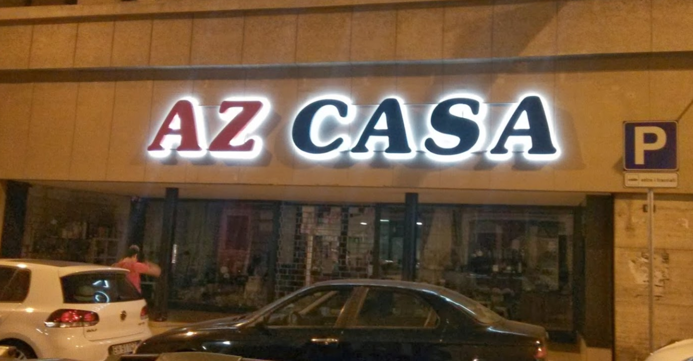
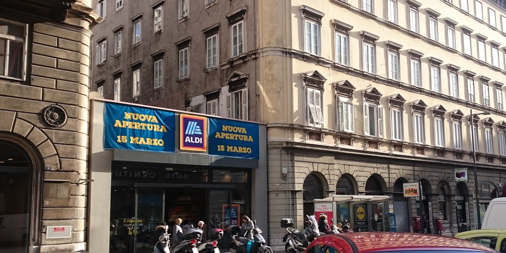
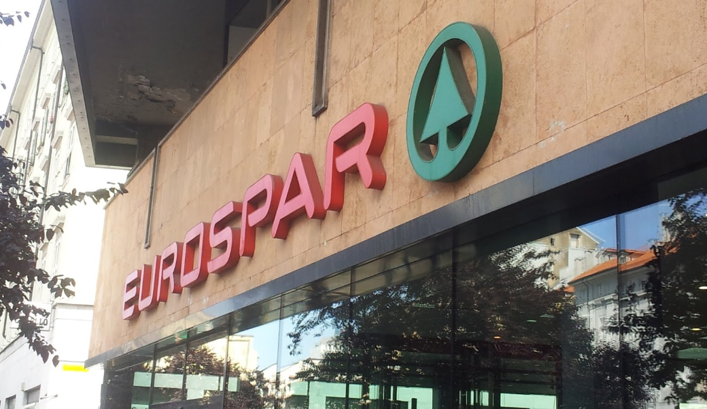
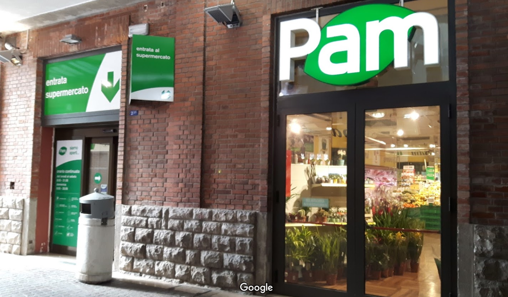
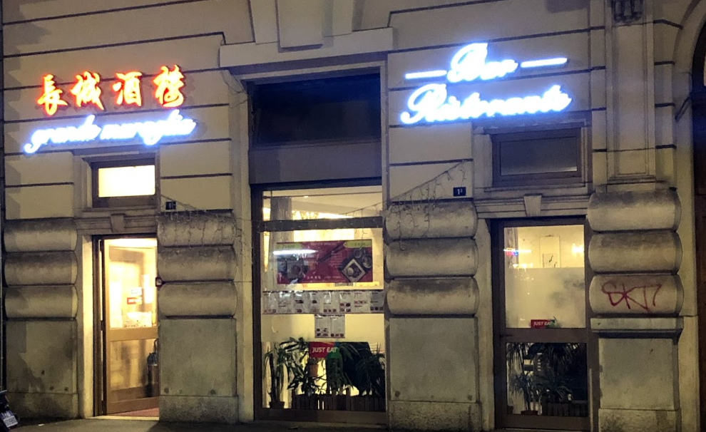
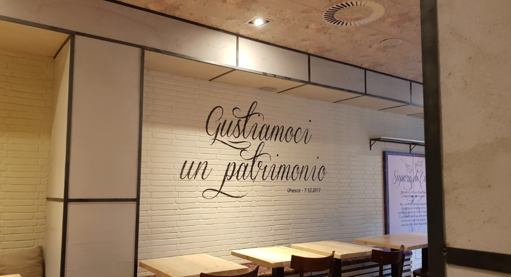
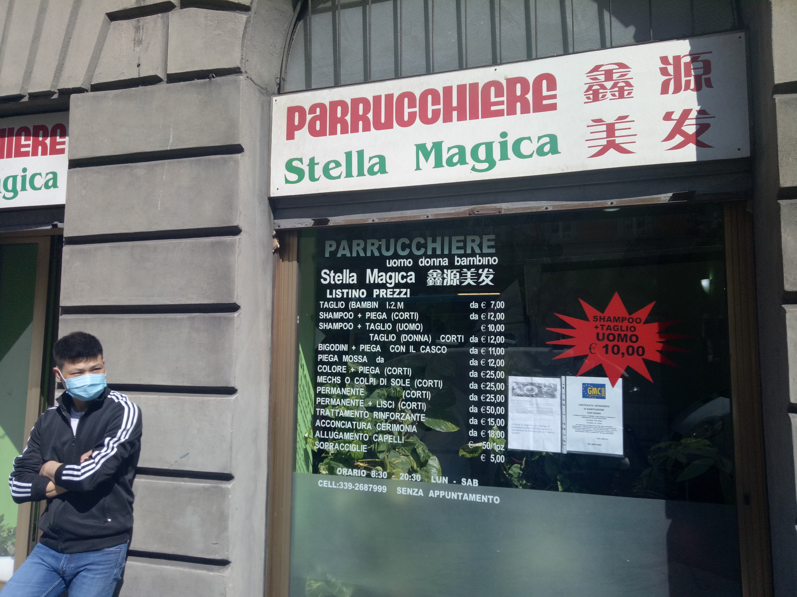
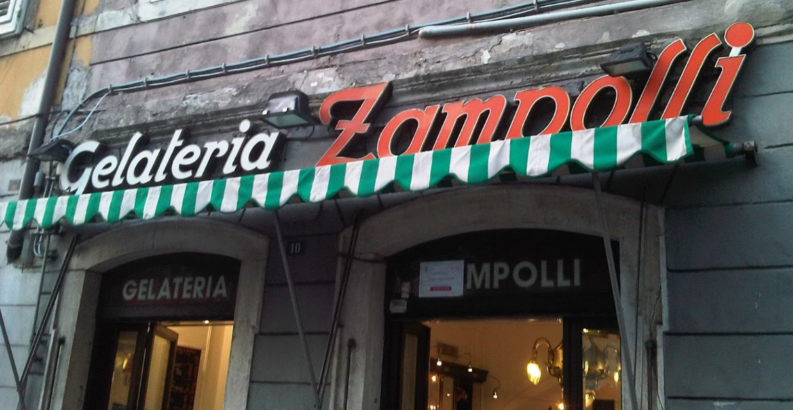

Trieste常用：超市、饭店、理发店、点心店
超市
亚洲超市
地址：Asia, Trieste, UTI Giuliana google map link
地址：Asia, Trieste, UTI Giuliana google map link

美食超市
地址：Piazza Dalmazia, 4 google map link
地址：Piazza Dalmazia, 4 google map link

AZ Casa (中国人杂货店)
地址：Via S. Francesco D'Assisi, 10 google map link

地址：Via S. Francesco D'Assisi, 10 google map link
Aldi
地址：Via del Coroneo, 1 google map link

地址：Via del Coroneo, 1 google map link
EUROSPAR Barriera V.
地址：Largo della Barriera Vecchia, 7 google map link

地址：Largo della Barriera Vecchia, 7 google map link
Torri D'Europa
地址：Via Bartolomeo D'Alviano, 23 google map link
地址：Via Bartolomeo D'Alviano, 23 google map link
Pam (火车站店)
地址：Viale Miramare, 1 google map link
地址：Viale Miramare, 1 google map link

Pam (Roiano店)
地址：Via Lionello Stock, 4 google map link

地址：Via Lionello Stock, 4 google map link
Pam (离Torri近)
地址：Via Campi Elisi-ang, Via D'Aviano google map link
地址：Via Campi Elisi-ang, Via D'Aviano google map link

IperCoop (Torri店)
地址：Via Bartolomeo D'Alviano, 23 google map link
地址：Via Bartolomeo D'Alviano, 23 google map link
Coop
地址：Corso Umberto Saba, 161 google map link
地址：Corso Umberto Saba, 161 google map link

饭店
长城 Grande Muraglia Trieste
地址：Via Benvenuto Cellini, 1E google map link

地址：Via Benvenuto Cellini, 1E google map link
Sakura (寿司)
地址：Riva Nazario Sauro, 6/b google map link
地址：Riva Nazario Sauro, 6/b google map link

DiNapoli Masters Pizzaioli (披萨)
地址：Via Armando Diaz, 10 google map link
地址：Via Armando Diaz, 10 google map link

Ristorante Osteria alla Valle (海鲜意面 需预订)
地址：Via della Madonna del Mare, 18 google map link
地址：Via della Madonna del Mare, 18 google map link

Al Toscano (牛排 需预订)
地址：Via Bonomea, 114 google map link
地址：Via Bonomea, 114 google map link

Casa Pepe Pizze e Cucina (披萨)
地址：Via del Coroneo, 19 google map link

里面有款叫做“Trieste”的披萨，其貌不扬，味道很好
地址：Via del Coroneo, 19 google map link
理发店
星光美发
地址：Via Roma, 23 google map link
地址：Via Roma, 23 google map link

行
地址：Via della Geppa, 17A google map link
地址：Via della Geppa, 17A google map link

鑫源美发
地址：Via Cesare Battisti, 20 google map link

地址：Via Cesare Battisti, 20 google map link
点心店
Gelateria Zampolli (冰淇淋)
地址：Via Carlo Ghega, 10 google map link

地址：Via Carlo Ghega, 10 google map link
Jerian Panificio Pasticceria (糕点店)
地址：Via di Roiano, 1 google map link
地址：Via di Roiano, 1 google map link